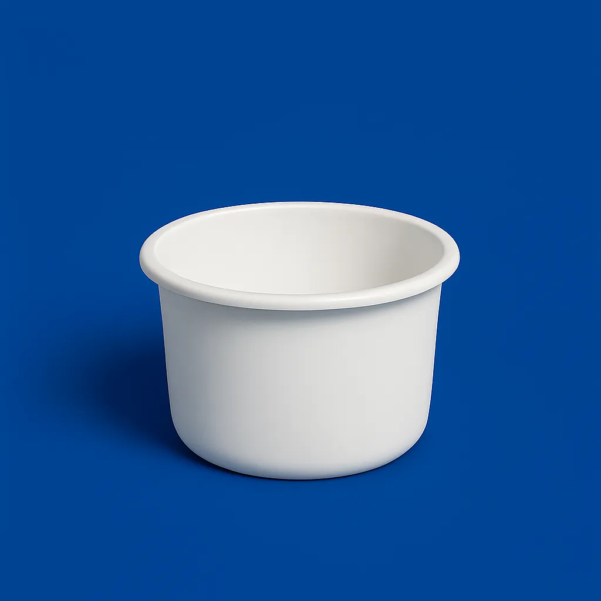

مشاوره فوری واتساپ
مشاوره فوری واتساپ
وانهای گرد طبرستان با طراحی استوانهای و مقاوم، در حجمهای ۱۵۰ تا ۳۰۰۰ لیتر، مناسب پرورش ماهی، نگهداری آب، استفاده در دامداری و مصارف کشاورزی هستند. این مدلها بهدلیل ابعاد یکنواخت، کاربرد گستردهای در مصارف بهداشتی و صنعتی نیز دارند. خرید وان گرد طبرستان با ارسال به پرند، رباطکریم و تهران از نمایندگی رسمی سالمی.

| نام محصول | کد محصول | ظرفیت (لیتر) | قطر (cm) | ارتفاع (cm) | افزودن |
|---|---|---|---|---|---|
| وان ۱۵۰ لیتری گرد | 2210100 | 150 | 70 | 50 | |
| وان ۲۰۰ لیتری گرد | 2211131 | 200 | 76 | 53 | |
| وان ۳۰۰ لیتری گرد | 2210171 | 300 | 85 | 65 | |
| وان ۵۰۰ لیتری گرد | 2210251 | 500 | 94 | 90 | |
| وان ۳۰۰۰ لیتری گرد | 3111441 | 3000 | 212 | 100 |
کارشناسان ما آماده پاسخگویی و راهنمایی برای انتخاب بهترین مخزن آب متناسب با نیاز شما هستند.
این وانها در پرورش آبزیان، دامداری، مصارف صنعتی، و آزمایشگاهها کاربرد گستردهای دارند.
بله، قابلیت نصب شیر، فیتینگ و خروجی برای تخلیه راحتتر در اکثر مدلها فراهم است.
ظرفیتها از 150 لیتر تا 3000 لیتر متنوع هستند.